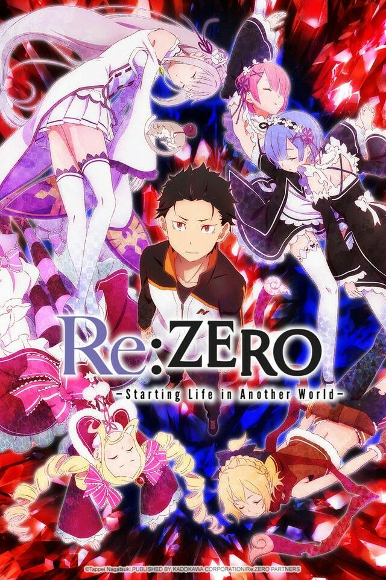
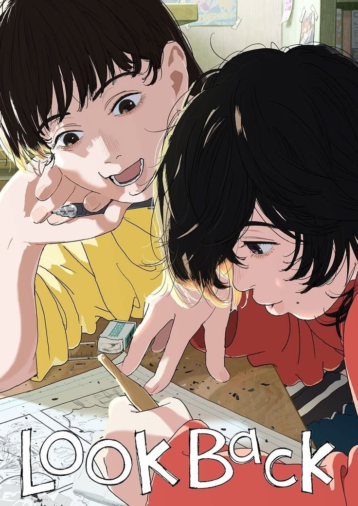
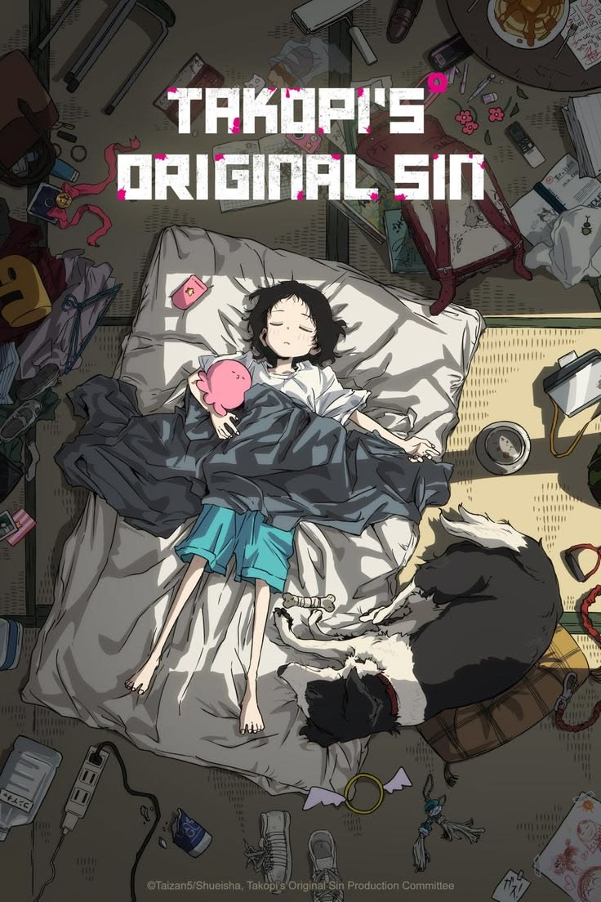
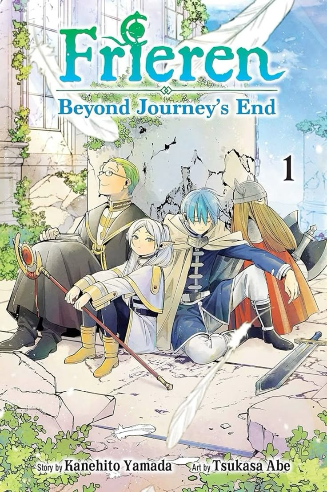

Séries/Animes




Gosto de personagens bem desenvolvidos e histórias impactantes.
ABC Bolinhas · Perfil de integrante
Livros, séries e filmes que fazem parte dos meus interesses.



Gosto de personagens bem desenvolvidos e histórias impactantes.

Gosto de ler histórias emocionantes.